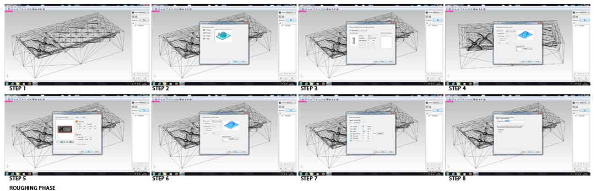

Week 9
Molding and Casting
TEXTURE
Assignment: Design a 3D mold, machine it, and cast parts from it.
molding_casting/index.htmlFor this exercise, I decided to design a texture inspired by Maurits Cornelis Escher' works.
MATERIALS:
- Machinable Wax (MATT-CARVING)
- Smooth-Sil 940
Software:
Fab Modules
Rhinoceros
Photoshop
TOOLS:
-Roland MonoFab SRM20
- Tool (Square 3mm)
- Tool (Square 1,5mm)
- Mask
- Glasses
- Screwdriver
- Gloves
DESIGN
- To design the 3D object I used Rhino.
I exported my model as Stl. I assured that is on and under the 0.0.0 origin point of the axes.
HARD MOLD
ROUGHING:
Roughing is a fundamental process, because it removes unnecessary parts from raw material . This operation is used to prepare the material for processing and finishing.
SETTING MACHINE:
- Open fabmodules.org
- Material: Modeling Wax
- Tool 3mm Square
- XY speed: 24 (mm/sec)
- Z speed: 10 (mm/sec)
- Speedle: 7000 (rpm)
- Cutting-in amount 0.6 mm
- Path interval 1.8 mm
- Finish margin 0.2 mm
- Fabmodules generates .rml file.

PROCESS:
Instructions:
- Turn on the machine for the heating, at least for 20 minutes.
- When the machine is ready, open Roland Vpanel.
- Load the .rml file.
- Use Tool "Square 3 mm"
- Set the X,Y,Z axes.
- Now you can mill.

FINISHING:
The finishing phase allows to remove last imperfections still present from the milled object.
SETTING MACHINE:
- Open fabmodules.org
- XY and Z speed: 16,8 (mm/sec)
- Speedle: 7000 (rpm)
- Cutting-in amount 0.2 mm
- Path interval 0.2 mm
- Finish margin 0 mm.
Due to the small details of my model, I needed the smallest tool for greater precision. I had to use the Tool: Square 1,5mm.

Repeat the process you did with roughing process but remember to change manually the diameter of the tool. Material: Machinable Wax.
PROCESS:
Instructions:
- Open Roland Vpanel.
- Load the .rml file.
- Use Tool "Square 1,5 mm"
- Set the X,Y,Z axes.
- Now you can mill.

SOFT MOLD
Apply the release agent to assist the removal of the silicone.

DOSE:
Calibrate the container and mix the right quantities of the two components. Silicone Part-A, white color, and Silicon Part-B, red color (10:1). Pot life is 40 minutes and cure time is 24 hours.
MIX:
Mix thoroughly until the material is not homogeneous.

During the pouring of the silicone into the mold, proceed very gently.
Ensure to distribute silicone everywhere, trying not to create air bubbles.
P.s.: It is very important, especially if you have lots of details on your mold, to degass the silicone before making the mold. The degassing removes air bubbles when the silicone is still liquid. If you do not degass, the air bubbles will cause imperfections in the mold and will then show up in the part.
Pot life is 40 minutes and cure time is 24 hours.
For food uses the mold must go into the oven for 2 hours at 80° and 1 hour to 100°.
CHOCOLATE MOLD:
After 24 hours

We decided to use the chocolate for our casting. An important local pastry and chocolate factory “Dolcemascolo” offered us his collaboration. They invited us to their laboratories, and they used our molds to make chocolate bars. A great experience!
The next step: I want to do is try out the mold with marble powder recycled, the topic of my project "Marble Eco Design".
I'll let you know.